Centro de Referência da Mama.
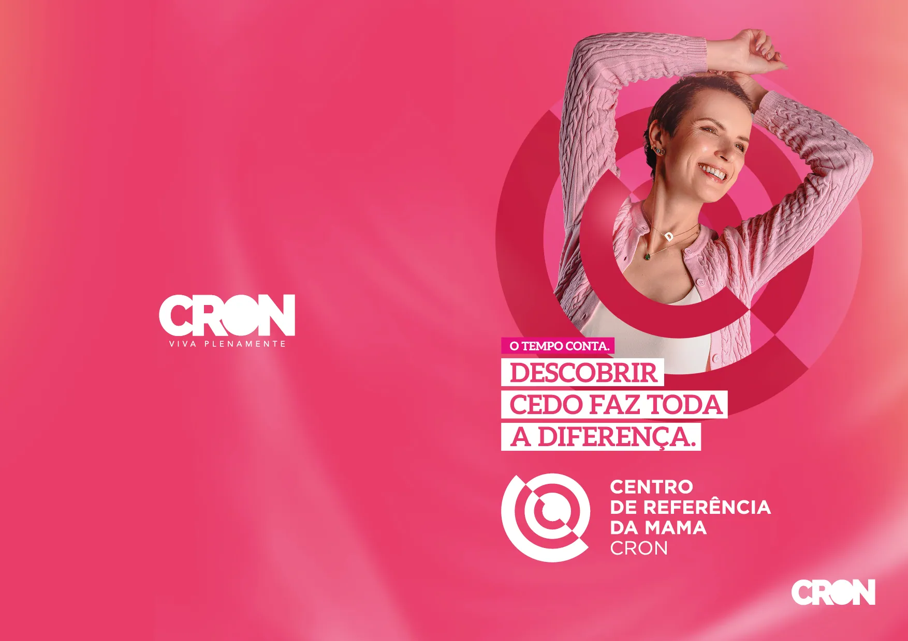
O CRON ganhou um novo serviço e precisava de uma marca à altura. Criamos a identidade e uma campanha construída em torno de uma verdade simples: o tempo conta, e descobrir cedo faz toda a diferença.
O desafio
Apresentar o Centro de Referência da Mama, com estrutura de diagnóstico e acompanhamento, e falar de prevenção sem medo, com acolhimento.
A ideia
O tempo conta. Uma campanha para mulheres a partir dos 40 anos, com foco no diagnóstico precoce e no cuidado especializado.
O que entregamos
Marca, KV, ensaio fotográfico, anúncios de jornal e revista, folder, carrossel, parede interna, camisetas, telas de LED na cidade, TVs internas e conteúdo para redes.
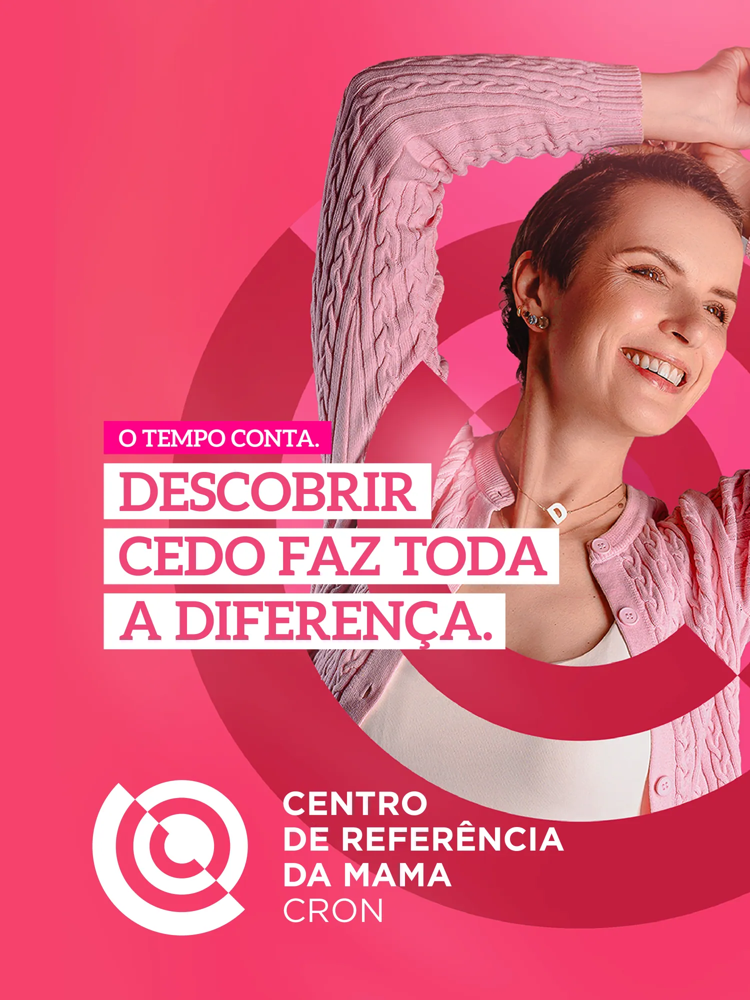
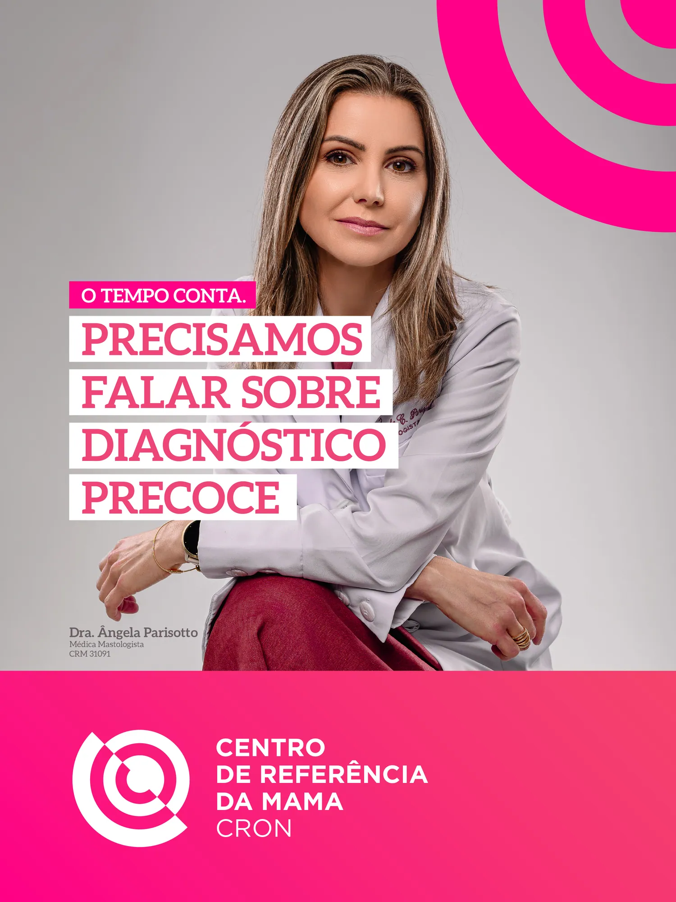
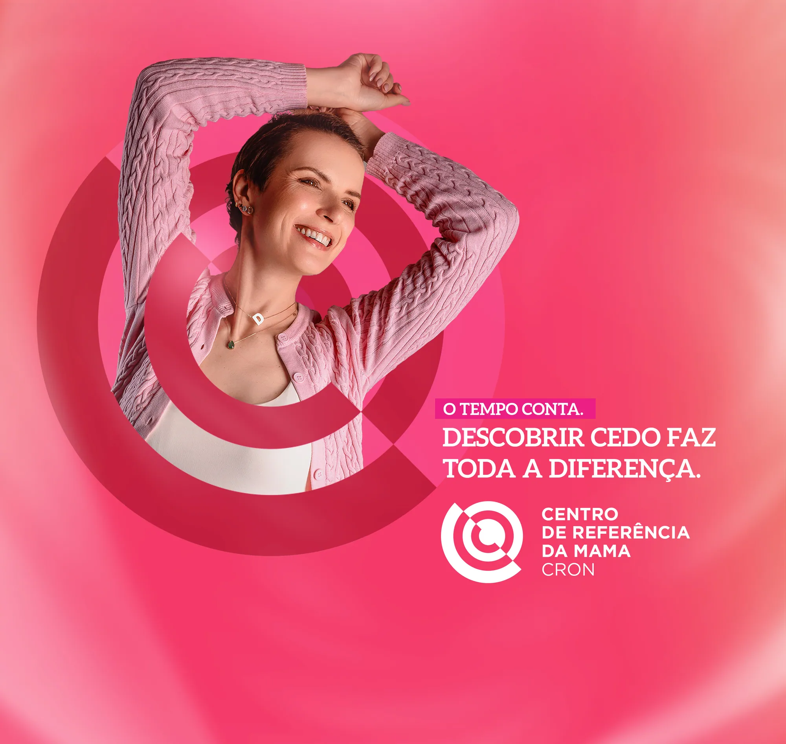
Informação que salva tempo
Carrosséis com dados, orientação e o convite para agendar a consulta.
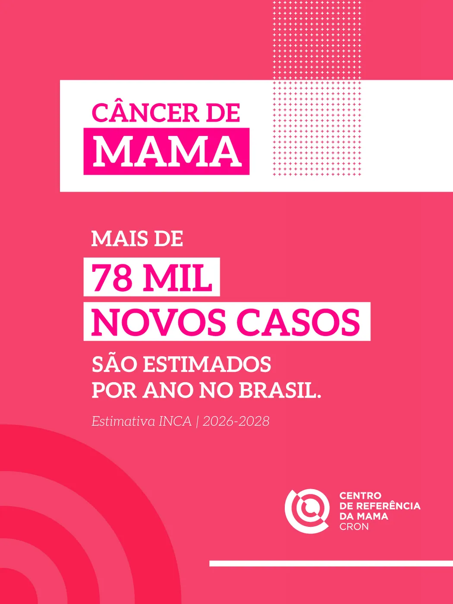
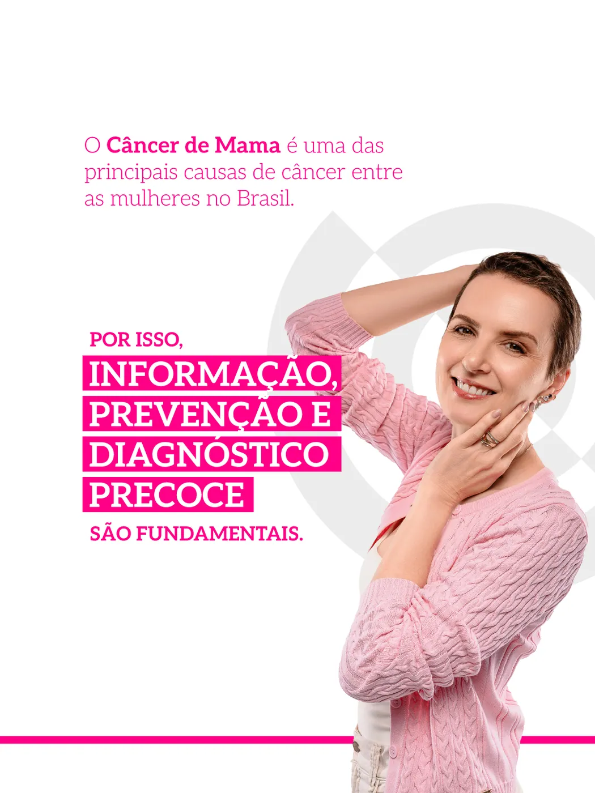
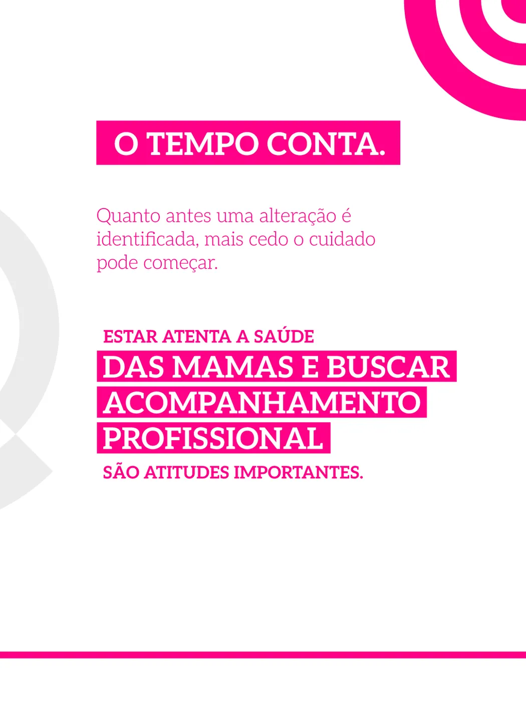
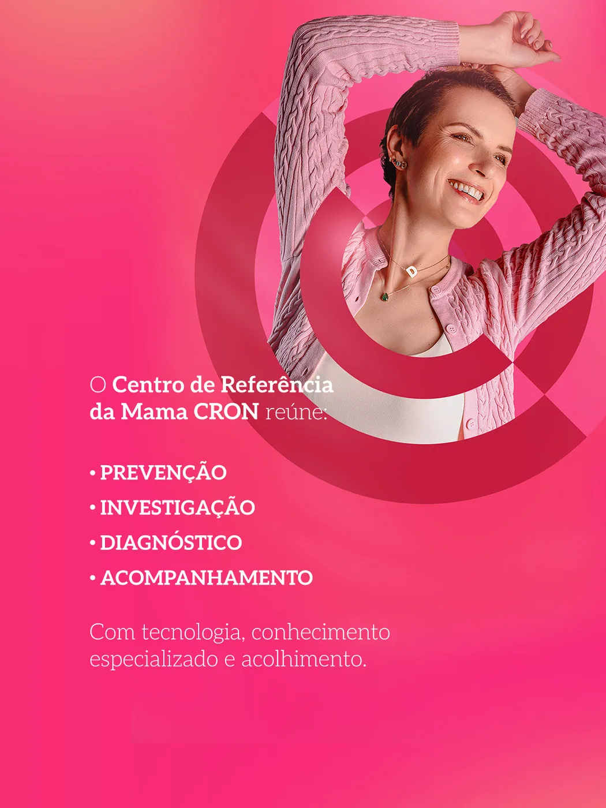
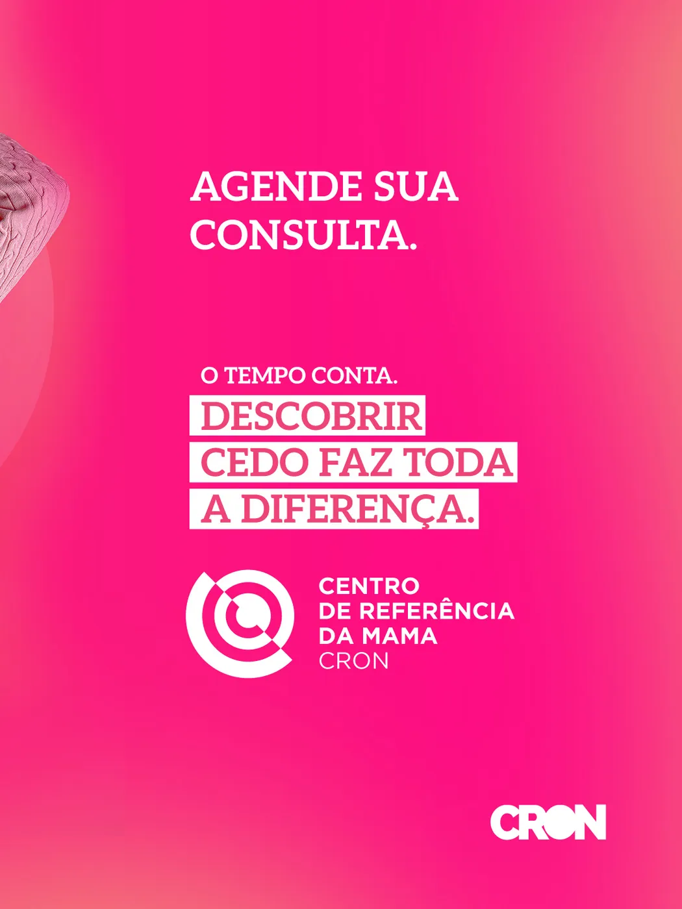
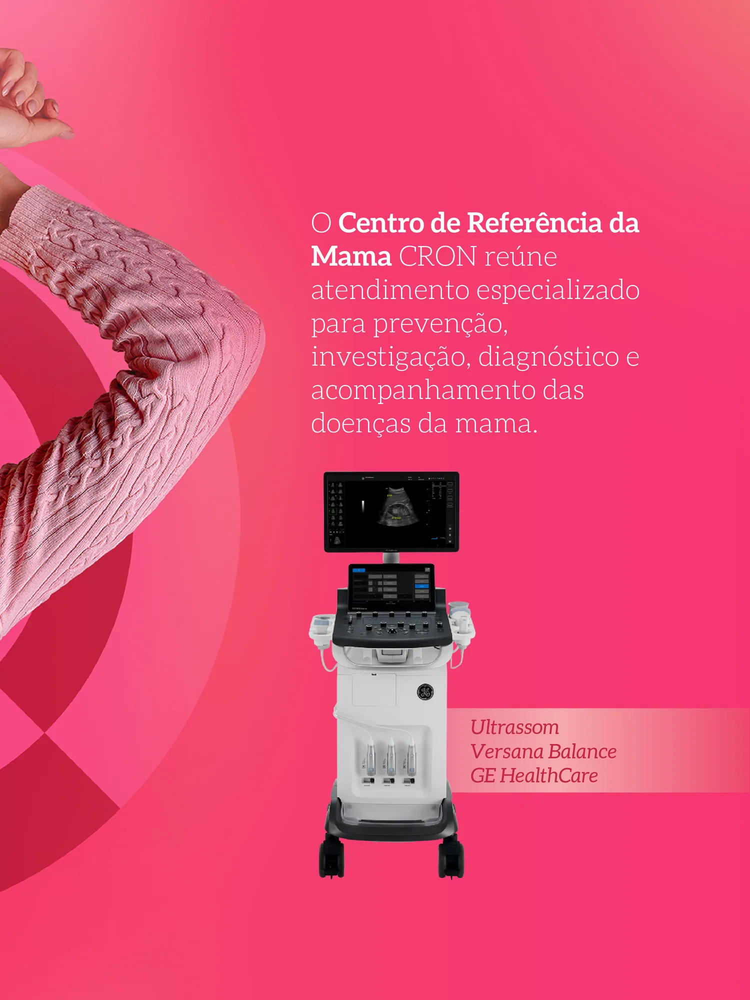
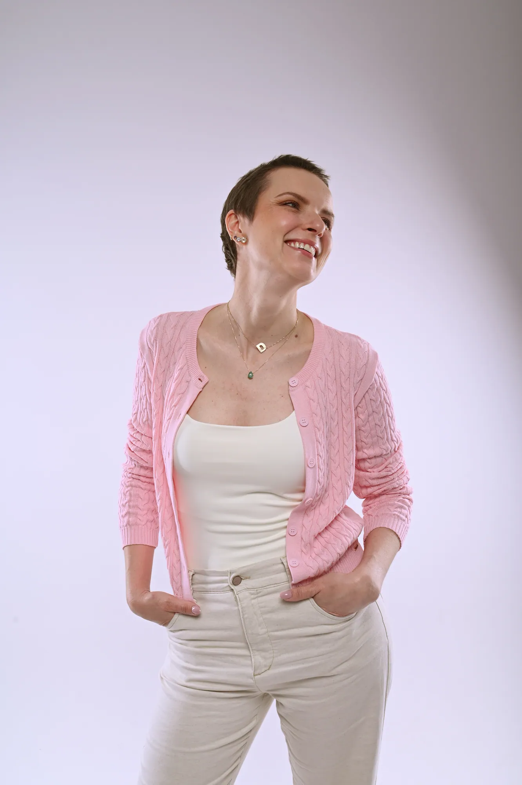
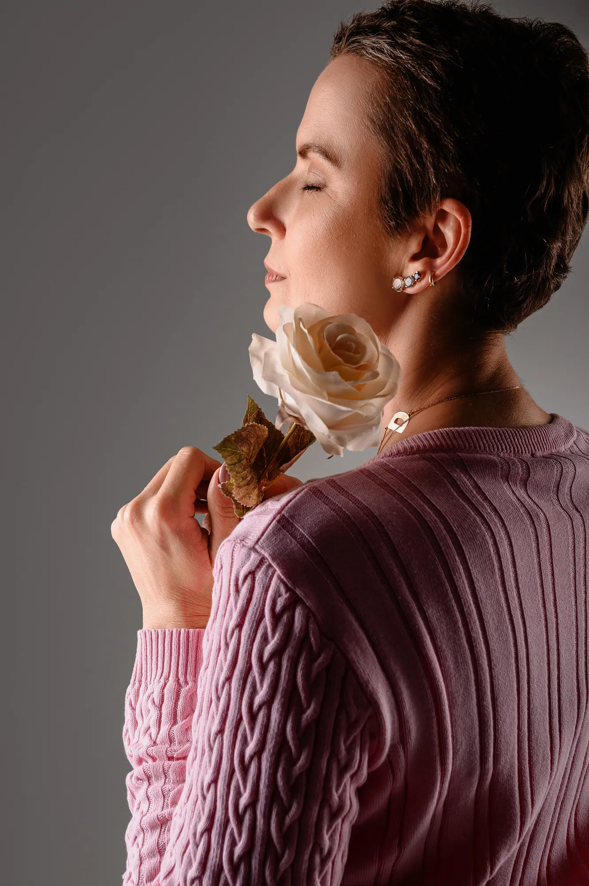
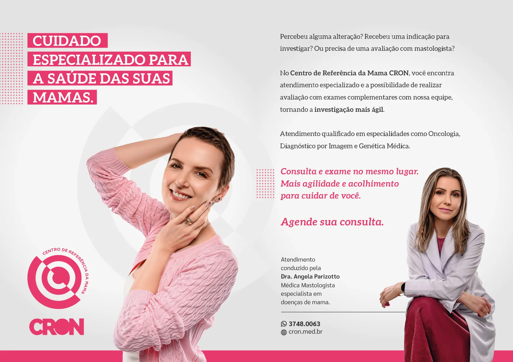
O tempo conta. Descobrir cedo faz toda a diferença.